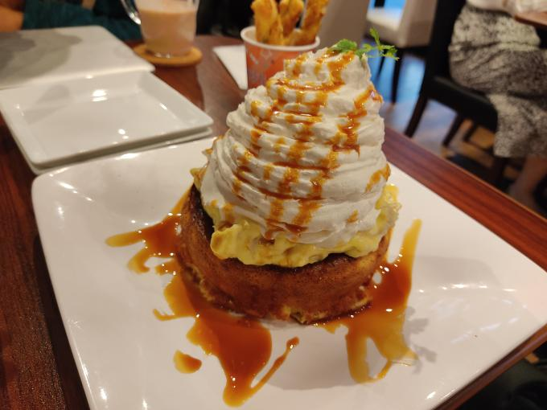

パンケーキ事変
こんばんは。零阪麻琴です。
この間、おいねこさんと秋葉原に行きましてね。
そん時にAsanっていうカフェに入ったんですよ。なかなか内装もきれいで、カフェの近く、というか同じ屋根の下にたくさんおしゃれなお店があるんですよね。
そこのカフェで私はカフェラテを、彼はアイスコーヒーとパンケーキ（レギュラー。ここ大事。）を注文しました。
色々今後の予定や理想論、私の煮え切らない話もしつつ注文したものを待ちました。
ちなみにここは前払い制で、キャッシュレス決済に関しては各種クレジット/デビットカードや交通系カードが使用可能です。
私はポッケの中にちょうど５００円が入っていたのでそれをそのまま出して支払い、おいねこさんはカードを使ってました。
さて、注文したものが届きました。

（写真はおいねこさんより拝借。この時私の携帯の電池は1%だった） なんだこれは?!コメダを遥かに超える大きさに一同（二人）驚愕。
急遽私も食べることにしましたが、これがおいしいんだなこれが。
と思っていたのもつかのま。山盛りクリームがかなりすごい（語彙力をなくした）。
こういう山盛り系はその分甘みを薄めたりするとちょうどいいのですが、なんとこれはどう考えても普通の量で使うことが前提のやつを使っている。
しかもこれ、本体とクリームの間にカスタードが挟まっているのだからすごい。
ポスターを見るといちごのせなんてのもあるらしい。いちごの酸味で多少は甘みが軽減されるかな（甘みを軽減することに主眼を置くんじゃない）
次行くときは３人以上だねこりゃｗとかにぐとめあれ出撃命令？ｗとか話しながら食べ終わりました。
そしてその後はドスパラに行くのだが、そこでとあるものを見つけるのだった...
（写真はおいねこさんより拝借。この時私の携帯の電池は1%だった） なんだこれは?!コメダを遥かに超える大きさに一同（二人）驚愕。
急遽私も食べることにしましたが、これがおいしいんだなこれが。
と思っていたのもつかのま。山盛りクリームがかなりすごい（語彙力をなくした）。
こういう山盛り系はその分甘みを薄めたりするとちょうどいいのですが、なんとこれはどう考えても普通の量で使うことが前提のやつを使っている。
しかもこれ、本体とクリームの間にカスタードが挟まっているのだからすごい。
ポスターを見るといちごのせなんてのもあるらしい。いちごの酸味で多少は甘みが軽減されるかな（甘みを軽減することに主眼を置くんじゃない）
次行くときは３人以上だねこりゃｗとかにぐとめあれ出撃命令？ｗとか話しながら食べ終わりました。
そしてその後はドスパラに行くのだが、そこでとあるものを見つけるのだった...
次回の動画へ続く
最後までお読みいただき、ありがとうございます。
もしよろしければこれを機に、当ホームページのブックマーク登録や相互リンク、Instagram、Reality、Twitterのフォローをよろしくお願いします。
Tweet
記事一覧に戻る
Consoles